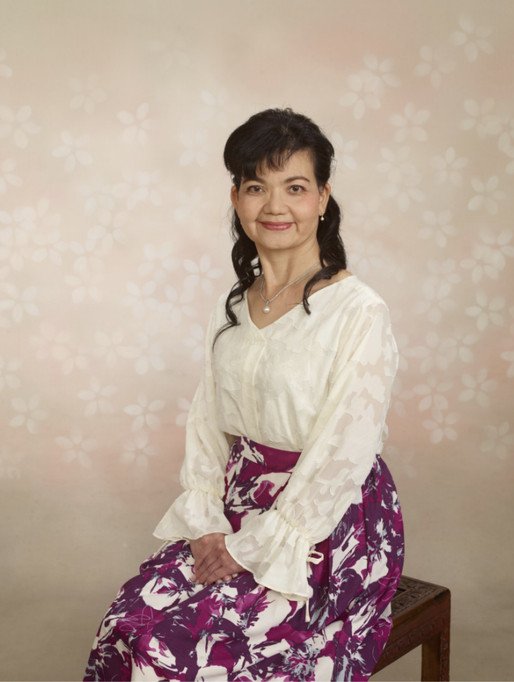
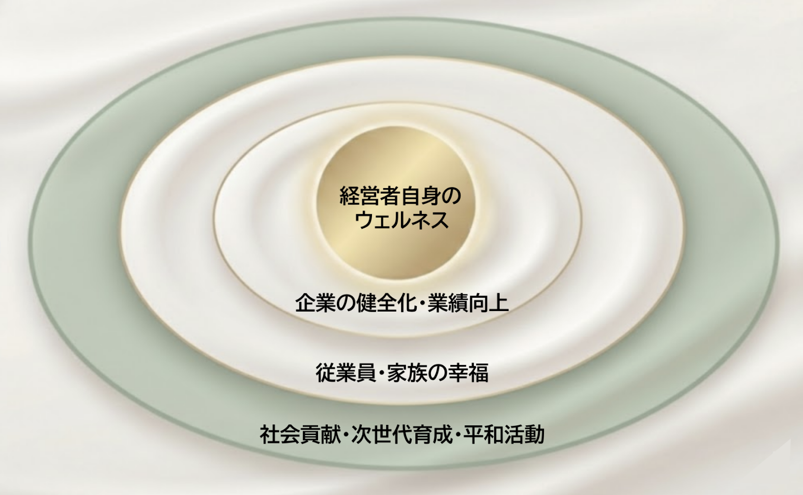
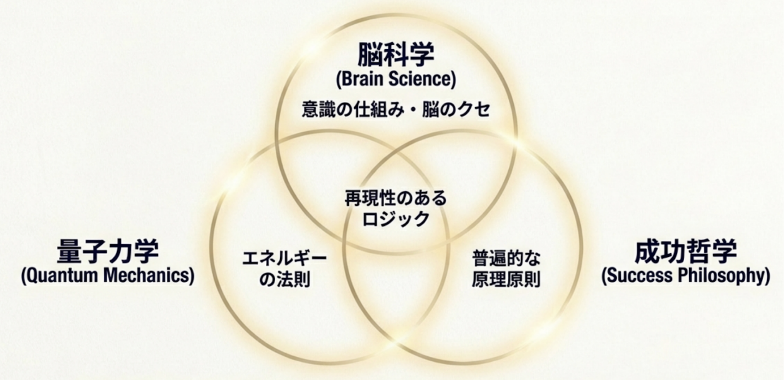
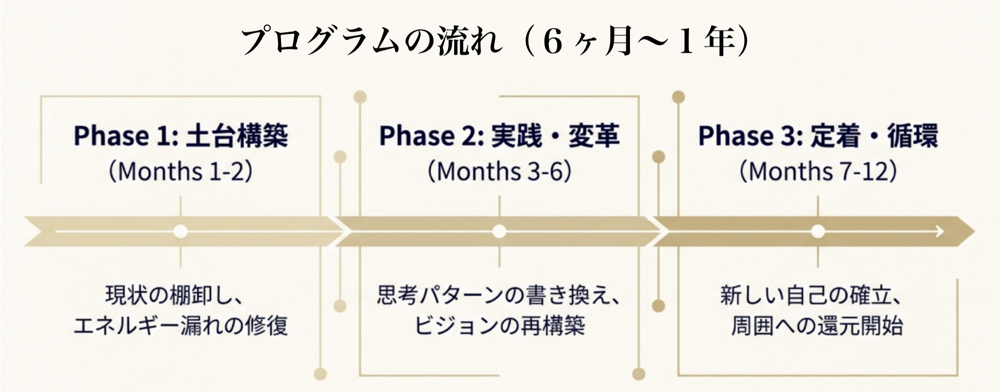

Wellness Coaching for Leaders
〜 循環を生み出す真のリーダーへ 〜
Sun mi-yu 代表 喜納 優子

自己実現を目指す経営者・リーダー層のために、
心身の健康を土台とした「伴走型」コーチングを提供します。
Origin Story
私は、戦後復興期の沖縄で地域経済を支えた経営者の両親のもとで育ちました。
「ゆいまーる」の精神を大切に、人と地域の未来を信じて事業を育てる姿から、経営とは利益だけでなく“人を幸せにする営み”であることを学びました。
その一方で、常に決断を求められ、責任を背負い続ける経営者の緊張や重圧も間近で見てきました。父の介護と看取りを経験したとき、強く心に残ったのは、経営者こそ心身が整い、安心して力を発揮できる環境が必要だという想いでした。
経営者が整えば、組織が整い、
地域に平和で豊かな循環が生まれます。
その伴走者として、私はウェルネスコーチングをお届けしています。
「病気ではない状態」以上の「ウェルネス（輝くように生き生きしている状態）」を土台とし、
豊かな人生と経営を実現することを目指します。

Contact
経営者は強くある必要はありません。ただ、人間らしく、健やかであるべきです。
初回セッションのご案内Program Features
本プログラムは、経営者、トップリーダー、目的意識をしっかり持っている自立した個人を対象にしています。「こうなりたい」という方向性を持っている方に適しています。

① 3つの科学的アプローチ
「脳科学」「量子力学」「成功哲学」を掛け合わせることで、感覚的なスピリチュアルではなく、論理的なシステムとして自己変革を導きます。
② オリジナル「コーチングノート」
手書きによる内観（ジャーナリング）で自己探求を深めます。セルフコーチングが習慣化し、あなた自身が最強のコーチになります。
Contact
経営者は、強くあろうとする必要はありません。人間らしく、健やかであることが何より大切です。
初回セッションのご案内Program Details

本プログラムは、月1回のセッションを含む半年〜1年の継続プログラムです。現在までに約10名が受講し、修了者も誕生しています。
Contact
まずは現在の課題とビジョンをお聞かせください。半年〜1年の継続型セッションです。
初回セッションのご案内